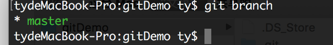
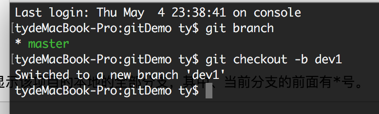
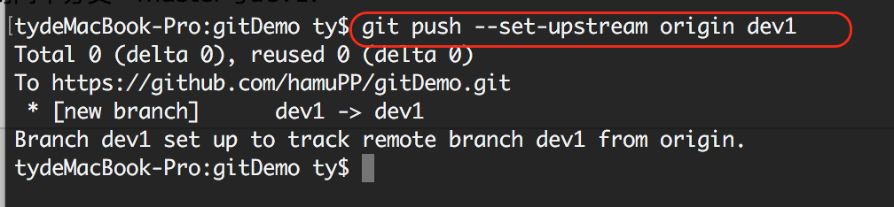
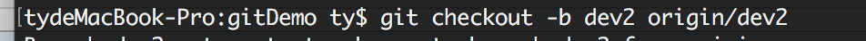

git 拉取远程指定分支 pull本地不存在的分支
默认，git项目只有一个分支，就是master,我们当然可以在本地创建多个分支，并推送到远程git管理平台上，或者将远程git管理平台上的其他分支拉取到自己电脑上。
一、查看本地已有的分支
进入到项目根目录，打开命令行/终端，输入指令，将会显示该项目的本地的全部分支，其中、当前分支的前面有*号。
git branch

二、本地检出一个新的分支并推送到远程仓库
（一）.创建本地分支
git checkout -b 新分支名
执行该指令后，会在本地创建一个新分支，该分支是从当前分支上检出的，所以所有文件内容都和当前分支一模一样，这是正常的。创建成功后，将自动切换至新分支上。
比如我要创建一个名为dev1的新分支：

此时，再执行git branch查看当前本地所有分支，就会看到两个分支：master与dev1.
（二）.推送本地分支到远程仓库
git push --set-upstream origin 分支名
例如，我要把上一步创建的本地dev1推送到远程仓库：

三、将远程git仓库里的指定分支拉取到本地（本地不存在的分支）
当我想从远程仓库里拉取一条本地不存在的分支时：
git checkout -b 本地分支名 origin/远程分支名
这个将会自动创建一个新的本地分支，并与指定的远程分支关联起来。
例如远程仓库里有个分支dev2,我本地没有该分支，我要把dev2拉到我本地：

若成功，将会在本地创建新分支dev2,并自动切到dev2上。
如果出现提示：
fatal: Cannot update paths and switch to branch 'dev2' at the same time. Did you intend to checkout 'origin/dev2' which can not be resolved as commit?
表示拉取不成功。我们需要先执行
git fetch
然后再执行
git checkout -b 本地分支名 origin/远程分支名
即可。